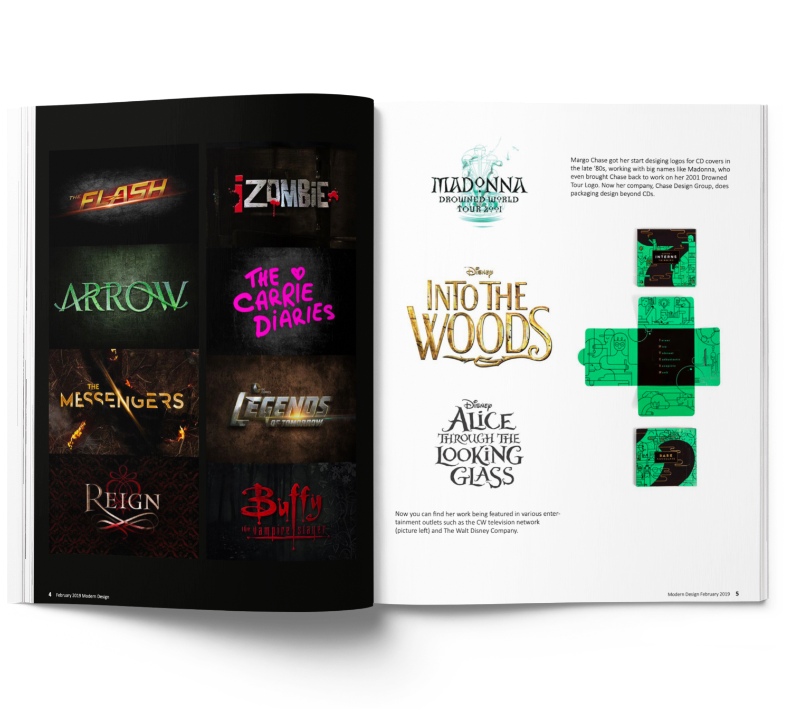
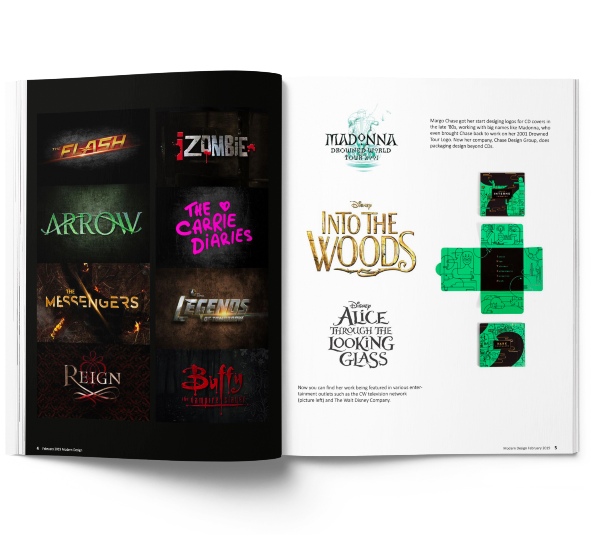

The aim of this project was to design a magazine cover with 4 page spreads showcasing the work of a beloved graphic designer that speaks to the legacy she left behind, complements her style, and does not overstep her bold and eclectic design choices. Margo Chase was known early on in her career as the “Queen of Goth” and later known for her fun expressive packaging designs. The cover photo shows her love for flying and her eclectic design style. I decided to separate her typography work from her packaging design work. In order to let her typography shine, I put her interview with the illustrations so there wouldn’t be an overload of text.
 
